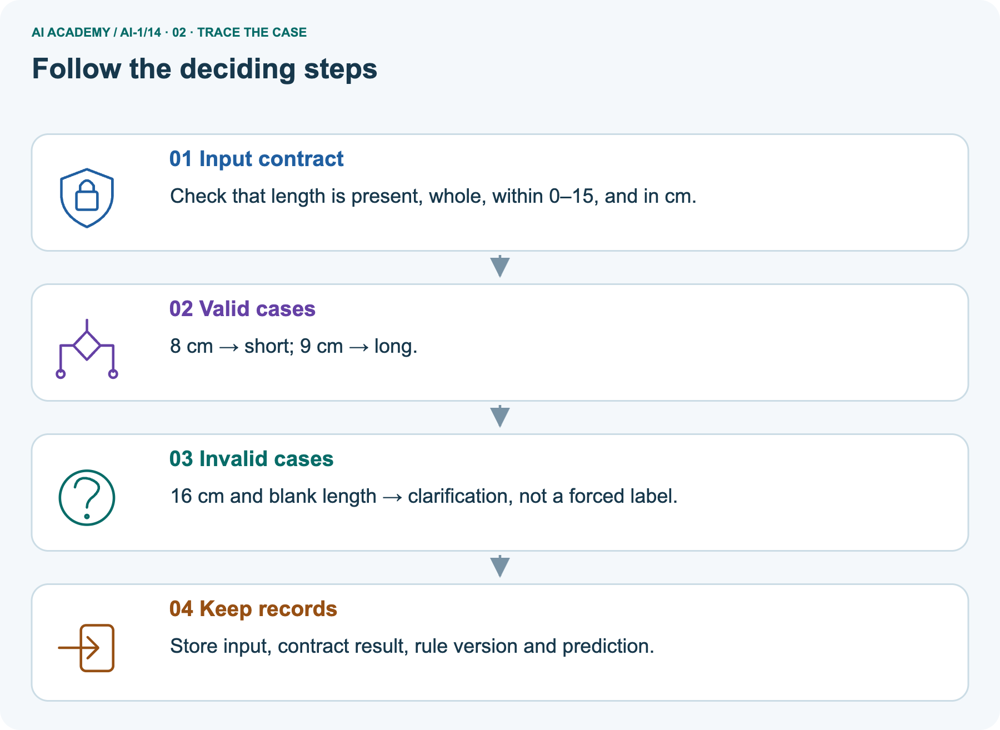
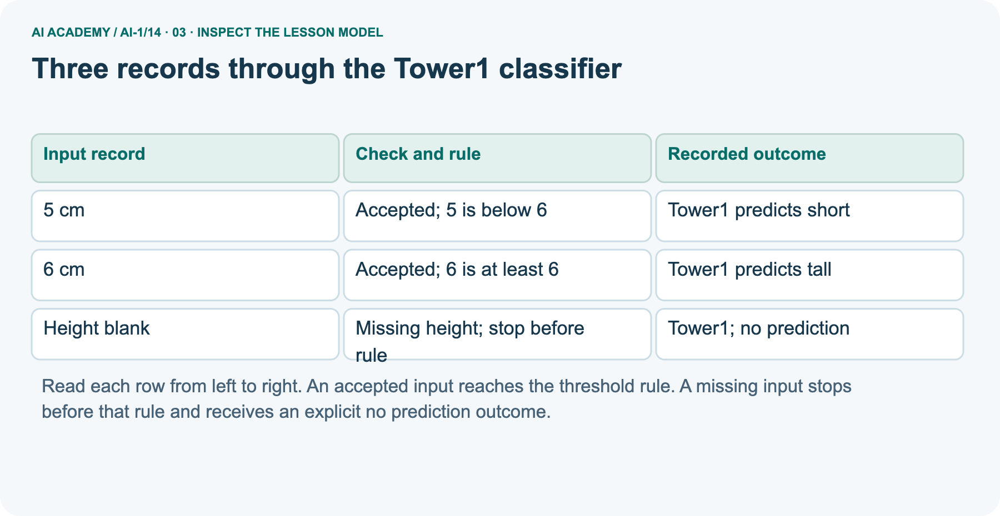
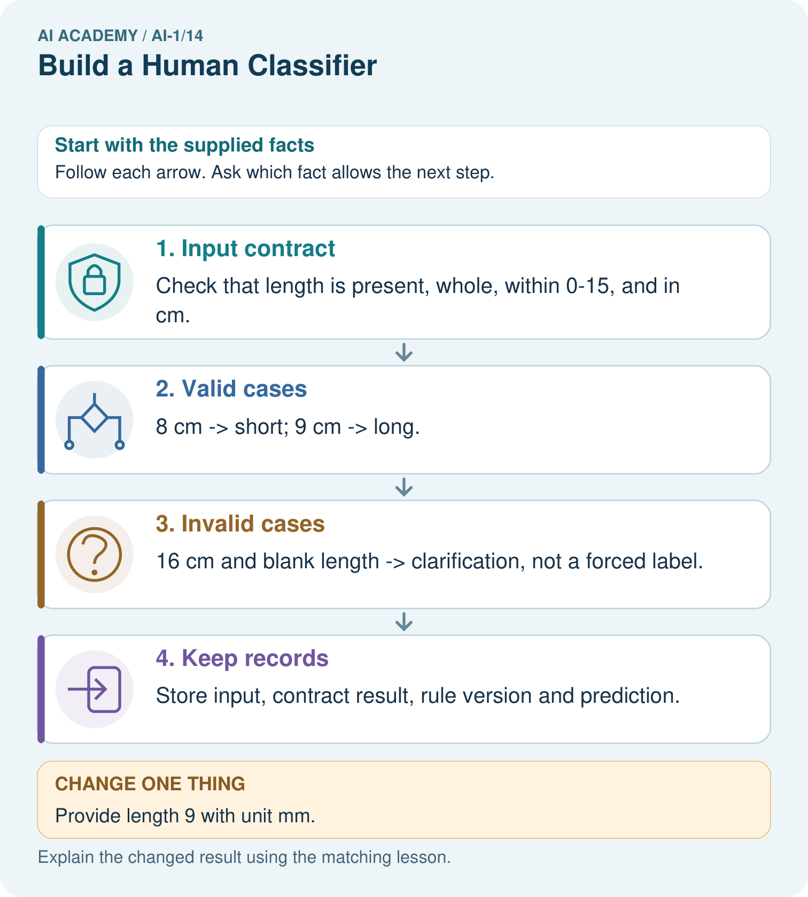
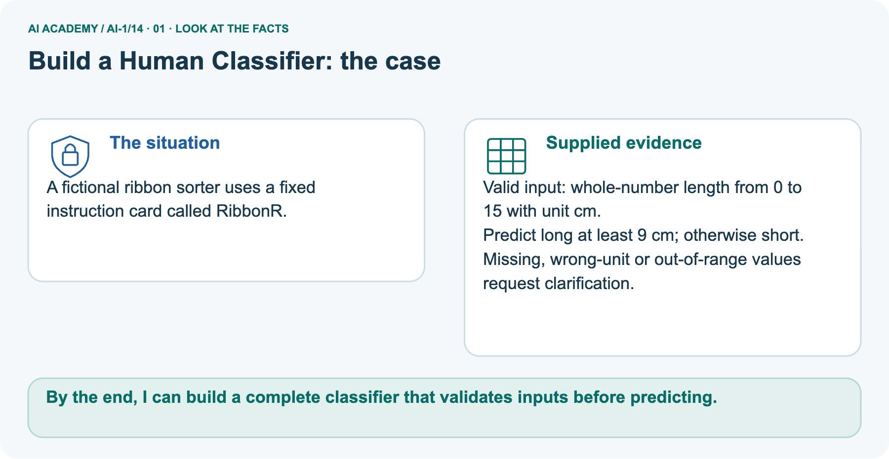
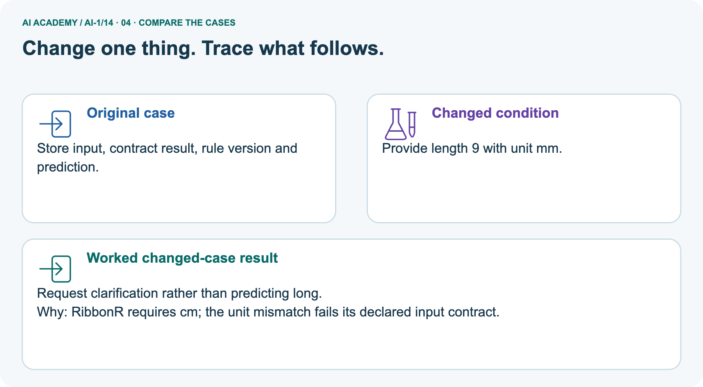
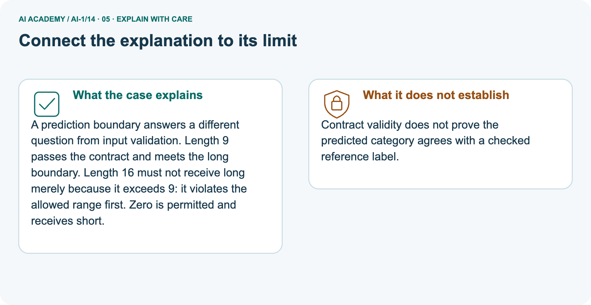
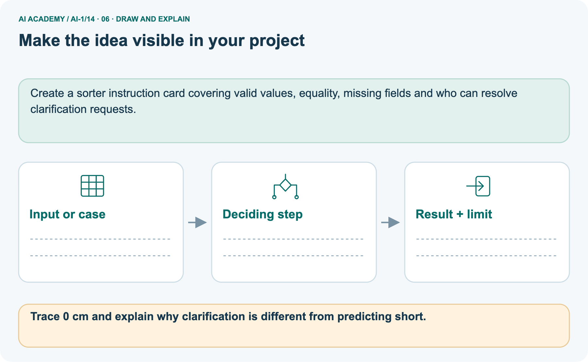

AI Academy · Level 1 · Grade 6 · Week 14 · Teacher guide
Build a Human Classifier
Learn to understand, design, build, test and explain AI systems responsibly.
Project: Helpful Classroom Sorter
THE CONNECTED WEEK
Teach input acceptance and prediction correctness separately.
Model named contracts, preserve rejected records and reserve Ribbon1 construction for independent evidence.
Keep one habit: Look for explicit stop paths, threshold equality and versioned records.
Main lesson · Section 1
Prepare this connected week
Use one main plan and keep practice separate from the independent first attempt.
Learning goal and precision
Primary target: Construct a classifier with a stated input format, selected rule and recorded output
Students construct a paper procedure around a fitted threshold, joining input checks, conditions, stopping and recorded output. Separate input validation, predictive correctness and subsequent human action.
Tower1’s range and whole-number requirement are classroom restrictions, not general requirements for classifiers.
By the end, I can build a complete classifier that validates inputs before predicting.
What to prepare
Use the supplied scenario, student illustrations and blank paper. For numeric work, offer counters or a calculator after learners show the setup. Fictional records are supplied; personal data and paid accounts are unnecessary.
Input cards with 1, 5, 6, 9, 10 and 11 cm, a blank, 60 mm and 4.5 cm
Blank paper for numbered steps or branch diagrams and a record with input, version, outcome and reason
Separate Ribbon1 task cards; no accounts, devices or personal measurements required
Main teaching plan
| Session | Sequence and minutes | Resources |
|---|---|---|
| Session 1 · Understand · 45 min | 0–7: recall and prerequisite; 7–15: inspect the concrete case and predict; 15–30: teacher models the worked trace; 30–40: learners explain a step using the text and visual; 40–45: check the core idea. | Use Your mission, Notice the evidence, See how it works, Compare the cases, Words that unlock the idea and Follow a worked example; record the brief recall in the workbook. |
| Session 2 · Practise · 45 min | 0–5: retrieve the procedure; 5–15: W2 completion practice; 15–23: explain and check with a partner; 23–30: each learner answers the misconception check; 30–40: targeted reteaching or a harder variation; 40–45: prepare the investigation. | Use Find and repair a mistake, Practise together, Run the investigation and Build your understanding; use the matching workbook W2 and misconception check. |
| Session 3 · Investigate and transfer · 45 min | 0–5: retrieve the decision rule; 5–20: investigate or trace; 20–30: start the independent case; 30–38: connect the project; 38–43: act on feedback; 43–45: plan the return check. | Use Run the investigation, Connect your project, Show what you know, Study a complete case and Try a new case independently. Allow extra time for the full task set. Use a coding lab only when this week actually provides one; Your lesson route is the planning section. |
This is a starting allocation of 135 minutes, not a validated duration. Preserve all named topics. Schedule extra time for connected examples, the full investigation, independent cases and project building.
Repeated copies of a case share one recorded attempt; they are not new evidence.
Opening retrieval and readiness
Without opening the old lesson, explain one key idea from Learning from Examples. Give an example and a mistake that the idea helps you avoid.
Look for: Fit a threshold by tracing predictions and counting disagreements for every candidate
Reference example, not the only acceptable wording: Threshold 3 predicts short, tall, tall, tall, disagreeing only at 4 cm: count 1. Threshold 7 predicts short, short, short, tall, disagreeing only at 6 cm: count 1.
Reset the tally for each candidate.
Without opening the old lesson, explain one key idea from Repeating Efficiently. Give an example and a mistake that the idea helps you avoid.
Look for: Trace a loop by testing its condition before every repetition
Reference example, not the only acceptable wording: Tests: 2 true, 4 true, 6 true, 8 false. Three additions are three iterations. The loop reports 8; the fourth test does not run the body.
Without opening the old lesson, explain one key idea from Features: Useful Clues. Give an example and a mistake that the idea helps you avoid.
Look for: Choose recorded properties that preserve distinctions needed for a stated task
Reference example, not the only acceptable wording: Use length and width measured before the decision. State the order as length in cm, then width in cm; the record is 12, 8.
The target is fits or too large under the guide, and this card is fits because both equalities are included.
Colour and card number are not needed for this rule; the final inspection sticker copies the answer and is unavailable before inspection.
At 5 predict short; at 6 predict tall. Check that a height was supplied. A blank is missing information, not the number zero.
Earlier wording, alternatives and picture transcripts
Teach the learning cycle
Case exposure check: this source example appears in ai-1/14, ai-2/10. Reuse a familiar case for recall or modelling; verify that the case used to assess transfer has not already received feedback.
Retrieval answer guidance
Learning from Examples
Repeating Efficiently
Features: Useful Clues
Use the student module and workbook section with this exact week title. The worked case, independent question and answers below form one aligned lesson sequence.
What the learner must demonstrate
A classroom rule labels anything with wings as a bird. Test a bat, a penguin and a toy aeroplane. Define the target independently, then propose a next step without pretending one visual clue solves biology.
Concept to explain
Classification maps features to a category using a decision boundary.
| Term | Meaning |
|---|---|
| classifier | process that predicts a category |
| feature space | map whose positions represent feature values |
| decision boundary | place where predicted class changes |
| borderline case | input near or across competing regions |
Prepare the class
This compact option is not the full-week schedule. Use the main teaching cycle and allow extra sessions for the investigation, independent work and project.
Allow 80 minutes: recall 8; explanation 12; worked demonstration 15; guided practice 20; independent assessment 15; project and reflection 10. Extend the lab into a second session when needed.
Preparation for the connected explanation
Readiness answer
End goal for the pictorial case
This added worked case illustrates the week’s main idea. Retain all original and connected topics; schedule its practice within the teaching cycle.
Main lesson · Section 2
Teach the complete classifier around the rule
Keep Tower1, worked RibbonR and independent Ribbon1 explicitly named so their ranges and thresholds stay separate.
Begin with Tower1’s origin and contract
Your task is to build a paper classifier that another learner can operate without guessing your instructions. It will predict short or tall for imaginary towers.
Use the threshold of 6 centimetres selected after adding the height 5 short example in Week 13. Name this selected model Tower1.
Write an input contract: one height recorded as a whole number of centimetres from 1 through 10, including both endpoints. Require the unit cm to be shown. This is a classroom design choice about what the procedure accepts.
It is not a claim that every accepted height appeared in fitting or that towers outside this range cannot exist.
A complete classifier needs instructions for checking the input, applying Tower1 when the input is accepted, and recording the outcome. It must also say what happens when the input fails a check.
The threshold alone does not provide these surrounding instructions.
Model validation, stopping and versioned recording
For every record, first check that a height is present and its stated unit is cm. Then check that it is a whole number from 1 through 10.
If any check fails, record no prediction and the reason, then stop processing that record. Do not continue into the threshold comparison.
If all checks pass, compare the height with 6. At least 6 gives the prediction tall; otherwise give short. Record the original input, model version Tower1 and the prediction.
For a rejected record, record the original input, Tower1, no prediction and a reason. Tower1 identifies the intended model even when its threshold was not used.
Trace the separate RibbonR card
A fictional ribbon sorter uses a fixed instruction card called RibbonR.
Valid input: whole-number length from 0 to 15 with unit cm.
Predict long at least 9 cm; otherwise short. Missing, wrong-unit or out-of-range values request clarification.






A prediction boundary answers a different question from input validation. Length 9 passes the contract and meets the long boundary.
Length 16 must not receive long merely because it exceeds 9: it violates the allowed range first. Zero is permitted and receives short.
Give RibbonR a wrong-unit record
Change: Provide length 9 with unit mm.
Prediction: Request clarification rather than predicting long.
Reason: RibbonR requires cm; the unit mismatch fails its declared input contract.
Separate a valid record from a correct prediction
Contract validity does not prove the predicted category agrees with a checked reference label.
Extend to Tower1’s endpoint and rejected records
| Input | Contract result | Outcome |
|---|---|---|
| 1 cm | Accepted at lower endpoint | Predict short |
| 9 cm | Accepted | Predict tall |
| 10 cm | Accepted at upper endpoint | Predict tall |
| 0 cm | Outside 1 through 10 | No prediction |
| 60 mm | Unit is not cm | No prediction |
| 4.5 cm | Not a whole number | No prediction |
A valid 9 cm input receives a tall prediction, but the input check does not establish that the prediction matches its comparison label. Validation checks the contract.
Evaluation checks predictions against appropriate evidence. Keep these questions separate.
Sixty millimetres equals six centimetres, but this version accepts cm records only. It does not contain a conversion step.
Ask for a correctly recorded cm measurement or deliberately design and check a conversion step in a new version. Do not silently treat the digits 60 as centimetres. A missing height must not become an invented zero either.
Use the picture deliberately
Use the diagram and verbal explanation together. Ask learners to match a sentence to a specific visual step; do not assign learners fixed visual or auditory learning styles.
Cover the result. Ask learners to name the inputs and predict the next step. Uncover one step, connect the icon to the actual procedure, and explain its evidence. Then change the supplied condition and compare.
The picture is a representation; it does not document execution of a real AI model.
Earlier wording, alternatives and picture transcripts
Explain the mechanism
Follow the information instead of imagining magic inside the machine.
1. Input — information entering
INPUT creature features
2. Process — the deciding step
PROCESS compare the feature point with a boundary
3. Output — the result
OUTPUT category A, category B, or not sure
CORE IDEA Classification maps features to a category using a decision boundary.
UNDER THE HOOD A classifier partitions feature space into decision regions. A decision boundary is where the predicted category changes.
Different boundaries may fit the same training examples but behave differently on unseen or borderline inputs.
Draw a fresh example with all three stages:
Every step connects a claim to observable evidence.
CASE Mystery creatures can be sorted using visible features such as antenna count and spot pattern, with the decision rule drawn on a feature map.
STEP 1 — OBSERVE creature features
STEP 2 — TRACE compare the feature point with a boundary
STEP 3 — CONCLUDE category A, category B, or not sure
MODEL REASONING Plot each creature by the selected features and draw a line or rule separating labeled examples. Cases near the line are sensitive to small changes and should receive careful review or a not-sure output.
DO NOT OVERCLAIM A drawn boundary describes the classifier's decision, not a natural law about the objects.
What new evidence could change this answer?
Concrete teaching case
A human classifier uses has wheels means vehicle on a bicycle, wheelchair, toy car and boat.
Apply the rule and identify a limitation.
Exact explanation to model
The first three receive vehicle; the boat does not. If the intended category includes boats, the rule misses them. Define the category independently of the prediction rule.
Explain the added worked example
Key terms
| Term | Meaning |
|---|---|
| Classifier | A procedure that assigns a predicted category to an input |
| Input contract | The format and conditions an input must satisfy for a procedure to accept it |
| Validation | Checking whether an input satisfies the stated contract |
| No prediction | An explicit outcome when the classifier does not assign a category |
| Model version | A name that identifies the particular model used for a prediction |
Model the reasoning aloud
Use the complete worked example below before asking learners to complete W2. Reveal a small part, invite a prediction, then explain the deciding step.
These teacher notes contain solutions; do not reveal the independent case answer during modelling.
| Thinking move | Teacher prompt |
|---|---|
| Plan | What is given? What is the question? Which procedure fits these facts? |
| Do | Point to each input and intermediate step in the worked trace. Name the rule that allows the next step. |
| Check | Does the output answer the question? Which assumption or limitation prevents a larger claim? |
A pictorial worked case: Build a Human Classifier
The facts we will use



Read the picture one step at a time
Why this result follows
What this example does not establish
Change one thing in the pictured case
Ask while showing the picture
Main lesson · Section 3
Guide the reasoning, then remove help
Collect a response from each learner before discussing the worked key.
Prompt before revealing
Completion task: Write numbered instructions for Tower1, including input checks, the stopping path after a failed check, the threshold rule and the record to keep.
Your partner must be able to use them without supplying an unstated rule.
Expected reasoning and fading help
Teacher check: Check present height and cm unit, then whole number in 1 through 10. On failure, record original input, Tower1, no prediction and the reason; stop that record.
Otherwise predict tall if height is at least 6, short otherwise. Record original input, Tower1 and prediction. Equivalent clear branches are acceptable.
Start by identifying the given inputs together. Leave the intermediate steps blank. If needed, model one step, then withdraw that help on the next step. Move to a full trace only when the partial trace is understood.
For partners, alternate explainer and checker; collect a response from every learner before discussion.
Check the misconception before discussion
Use the worked case for Constructing a classifier. Proposed explanation: “Any numeric input must receive a category”. Decide whether this explanation is supported.
Point to the step or supplied fact that decides; explain your repair if needed.
Expected correction: Check the stated unit, whole-number condition and supported range before comparing the threshold.
Collect explanations, not only yes/no votes. If a misunderstanding is common, re-model the relevant step for the class.
If it affects a few learners, give a short targeted group explanation while others solve a more demanding variation.
Use the pictorial check
Trace 0 cm and explain why clarification is different from predicting short.
0 is a valid whole-number centimetre input, so RibbonR predicts short. Clarification means no supported prediction was made because required input checks failed.
Changed-case reasoning: Request clarification rather than predicting long. RibbonR requires cm; the unit mismatch fails its declared input contract.
Collect each learner’s explanation before discussion. Use the first missing connection between input, deciding step and result to choose support. This question is worked-case practice, not fresh mastery evidence.
Keep each learner explaining
Ask: Which facts are given, and which would we have to assume? Learners mark relevant details before discussing answers.
Say: Predict first. Show the rule, information path or calculation that would produce the result. A correct guess is not yet an explanation.
In pairs, one learner solves while the other checks evidence; exchange roles. Remove the worked answer before independent assessment.
Earlier wording, alternatives and picture transcripts
Demonstrate and guide practice
Board sequence
Write the given facts: A human classifier uses has wheels means vehicle on a bicycle, wheelchair, toy car and boat.
Write the question to explain: Apply the rule and identify a limitation.
Reveal after predictions: The first three receive vehicle; the boat does not. If the intended category includes boats, the rule misses them. Define the category independently of the prediction rule.
Use the earlier changed question as optional later practice. Reserve Build an independent ribbon classifier for the first independent attempt before hints or feedback.
Classroom dialogue
Reveal reasoning one step at a time. Explain why a tempting alternative fails. Write units and denominators for arithmetic, trace conditions for decisions, and identify supporting sources for claims.
Model these guided questions
Check presence, cm unit, whole number and range 1 through 10 before comparing. At 1, 6 and 10 cm predict short, tall and tall. At 11 cm record no prediction, outside range; at blank record no prediction, missing height.
Record Tower1 throughout. Acceptance of 10 cm does not verify its label. Exit: 9 cm passes the contract and predicts tall, but correctness still needs evidence. A blank must stop as no prediction.
Case-specific teaching sequence
| Stage | Teacher action |
|---|---|
| Session 1 start 0 to 7 minutes | Retrieve threshold equality and the difference between missing and zero. Introduce the goal of instructions another learner can execute. |
| 7 to 20 minutes | Read the Tower1 contract and model aloud. Trace 5 cm, 6 cm and blank through the diagram. Stop physically before comparing the rejected card. |
| 20 to 33 minutes | Compare valid boundaries and rejected units or fractions. Complete W1 and explain why acceptance is not proof of a correct label. |
| 33 to 45 minutes | Start W2 in pairs. One learner writes, the other follows only the written instructions. Require an explicit stop after a failed check. |
| Session 2 start 0 to 8 minutes | Retrieve the output record and both paths. Ask whether no prediction is a tower size. |
| 8 to 23 minutes | Use the guided task and W3 to test partners’ procedures at endpoints, threshold and missing input. Record and repair ambiguity. |
| 23 to 38 minutes | Collect W4 independently before support. Look for transfer to the new range, threshold, labels and version instead of copied Tower1 constants. |
| 38 to 45 minutes | Use W5 and the exit to separate contract checks from correctness evidence. Preview final tests kept apart from model selection. |
Reduce help deliberately
Individual reasoning check
Pictorial practice question
Reasoned teacher answer
Main lesson · Section 4
Run the supplied investigation
Keep expected results, observed paper traces and remaining limits distinguishable.
Supplied materials and answer guidance
CreatureC accepts 1 and predicts B; accepts 2 and predicts A; rejects 5 as out of range; and rejects a blank as missing. The rejected records retain CreatureC and a reason but do not reach the comparison. Pattern is irrelevant under this declared count rule. An accepted prediction is not yet verified against a reference label. Reserve Build an independent ribbon classifier for the individual first attempt.
Run and record
Complete the task: Classify mystery creatures and make the boundary visible.
Keep a normal case and an edge case clearly separated.
Record what happened—even when it does not match your prediction.
Explain the result, one limitation, and the next useful test.
Keep an inspectable record
| Record | What to capture |
|---|---|
| Input or evidence | Exact data, instruction or claim |
| Expected result | Answer or safe fallback declared before the run |
| Observed result | Actual result, including errors |
| Explanation | Rule, calculation or evidence explaining the outcome |
| Next test | One justified change and a new prediction |
Diagnose the first misunderstanding
Any numeric input must receive a category: Check the stated unit, whole-number condition and supported range before comparing the threshold.
An accepted input proves a correct prediction: Ask separately whether the input satisfies the contract and whether the prediction agrees with evaluation evidence.
No prediction means a third category of tower: It is a system outcome indicating that no short or tall category was assigned.
Choose support from the response
Match the support to the first error
| What the response shows | Next teaching action |
|---|---|
| Missing or misread facts | Read the case aloud, mark supplied versus unknown facts, and let the learner restate it. |
| Wrong procedure | Return to the deciding step in the worked case. Contrast it with the proposed incorrect explanation. |
| Arithmetic or implementation error | Trace intermediate values or lines; preserve the first mismatch and retry that step. |
| Correct result without a reason | Ask for a trace and a changed case before marking independent understanding. |
| An unsupported wider claim | Ask which supplied evidence supports the claim and which further observation would be needed. |
Earlier wording, alternatives and picture transcripts
Run the weekly evidence lab
Predict first, test honestly, and explain what the evidence means.
State your prediction before the result is known.
INDEPENDENCE After support is removed, repeat the proof with a fresh case.
Make the lab runnable
Use the supplied investigation for shared practice. Keep predictions and observed paper-trace results separate. Reserve Build an independent ribbon classifier for the individual first attempt before feedback; do not use the reserved case as a paired lab task.
Diagnose and reteach
CLAIM TO REPAIR A classifier must always choose one of its labels.
For guessing, return to given facts and request a trace. For vocabulary without application, use one example and one non-example. For arithmetic errors, check the setup before the calculation.
Finish with a different uncoached case before recording mastery.
Address these additional misconceptions
Writing a rejection is enough even if processing continues: Follow the failed path to an explicit stop so the later rule cannot overwrite the outcome.
Offer an oral explanation, drawing, enlarged visual or fewer examples when that removes a reading/writing barrier. Keep the same reasoning goal.
Stretch secure learners by changing a boundary or assumption and asking them to defend the effect, not simply by assigning more of the same questions.
Main lesson · Section 5
Assess the selected new case
Keep this key until after the first attempt; accept valid alternatives with defensible reasoning.
Selected independent question and key
Selected case: Design Ribbon1 for ribbon lengths recorded as whole centimetres from 1 through 12 inclusive, with unit cm required. Predict long at 8 cm or more and short otherwise.
Write complete instructions and trace 7 cm, 8 cm, a blank length and 13 cm. Include reasons for no prediction and the model version in each record.
Check present length, cm unit, whole number and range 1 through 12; otherwise record no prediction with reason and stop. For accepted inputs, use at least 8 for long, otherwise short.
Ribbon1 at 7 cm predicts short; at 8 cm predicts long; blank gives no prediction because length is missing; 13 cm gives no prediction because outside range.
Each record includes original input, Ribbon1 and outcome, plus reason when rejected.
Judge explanation, trace and limits
| Dimension | Evidence required |
|---|---|
| Explanation | Names the applicable idea or procedure and ties it to the supplied facts. |
| Trace and result | Preserves the given inputs and shows the relevant intermediate steps; distinguishes a prediction from an observed execution. |
| Limits | States the assumptions, missing evidence or conditions under which the result would change. |
Record each dimension as not yet, with support, or independent. Accept a valid alternative procedure with a defensible trace.
Do not penalise an honestly recorded model failure if the learner correctly explains its evidence and limits.
Give one usable repair action
Name the earliest unsupported step and give one action to repair it. Have the learner make that repair now and explain why. Then assess the relevant skill on a fresh, fully specified case.
Confirm it was not previously practised with feedback; solve and check the new case before assigning it. A follow-up design prompt is a starting brief, not automatically an equivalent test.
W1 Write an input contract
Write the complete Tower1 input contract. Give one accepted example and three different rejected examples, each with its reason. Explain why an accepted input does not have to be one of the examples used to fit the threshold.
Require a present height, unit cm, a whole number and range 1 through 10 inclusive. For example, 7 cm is accepted; blank is missing, 60 mm has the wrong unit and 11 cm is outside the range.
Fractional values such as 4.5 cm also fail. The contract defines accepted inputs; it does not list only the fitting records or establish prediction correctness.
W2 Construct both outcome paths
Write numbered instructions for Tower1, including input checks, the stopping path after a failed check, the threshold rule and the record to keep. Your partner must be able to use them without supplying an unstated rule.
Check present height and cm unit, then whole number in 1 through 10. On failure, record original input, Tower1, no prediction and the reason; stop that record. Otherwise predict tall if height is at least 6, short otherwise.
Record original input, Tower1 and prediction. Equivalent clear branches are acceptable.
W3 Trace boundaries and a broken path
Trace 1 cm, 5 cm, 6 cm, 10 cm and 11 cm using Tower1. A faulty procedure records no prediction for a blank, then continues and treats the blank as zero to report short.
Identify the missing instruction and the proper final outcome.
The first four are accepted and predict short, short, tall and tall. At 11 cm reject for being outside the range. The faulty path lacks stopping after failure; a blank must end as no prediction with reason missing height.
It must not be converted to zero or reach the threshold rule.
W5 Explain what your procedure establishes
Ribbon1 accepts 12 cm and predicts long. No comparison label has been supplied for that record. State what has been checked and what remains unknown.
Explain why changing a blank to 1 cm just to produce a category would be a mistake.
The value satisfies the input contract and the stated rule predicts long. Agreement with an appropriate comparison label has not been checked.
Replacing a blank with 1 invents a measurement, conceals missing information and violates the stated rejection path. Ask for the measurement instead.
Earlier wording, alternatives and picture transcripts
Assess and explain the answers
Worked case answer
The first three receive vehicle; the boat does not. If the intended category includes boats, the rule misses them. Define the category independently of the prediction rule.
Additional transfer practice question
Use a human classifier: three straight sides forming a closed shape means triangle; four equal straight sides and four right angles forming a closed shape means square. Classify a three-sided card and a card whose corner is hidden. When should you pause?
Reasoned practice answer
The visible closed three-straight-sided card is a triangle. A square requires four equal sides and four right angles; equal sides alone are insufficient. Pause on the partly hidden card when the required sides or angles cannot be checked. Ask for an unobscured view instead of guessing.
What counts as evidence
| Criterion | 0 points | 1 point | 2 points |
|---|---|---|---|
| Result | Incorrect or absent | Partly correct | Correct with necessary conditions |
| Reasoning | No supporting trace | Some steps | Clear mechanism, calculation or source support |
| Limit | Overclaims certainty | Vague limitation | Relevant uncertainty or missing fact |
| Transfer | Copies without adapting | Adapts with prompts | Solves a changed case independently |
Use 6/8 as a classroom checkpoint, with 2 required for both Result and Reasoning. This is a proposed teaching rule, not a validated certification threshold.
Do not count a coached answer as independent mastery; correct unsafe or unsupported claims regardless of total.
Feedback
Ask the learner to find the evidence that challenges this claim: “A classifier must always choose one of its labels.” Keep the first attempt and an uncoached retry separate.
Original transfer answer
A bat and toy aeroplane are not birds but may satisfy the wing rule; a penguin is a bird even though it cannot fly. Use reliable biological labels and gather more relevant features.
Accept explicit uncertainty where the available evidence is insufficient.
Explanations for the additional workbook examples
W1 Write an input contract
W2 Construct both outcome paths
W3 Trace boundaries and a broken path
W4 Build an independent ribbon classifier
Design Ribbon1 for ribbon lengths recorded as whole centimetres from 1 through 12 inclusive, with unit cm required. Predict long at 8 cm or more and short otherwise.
Write complete instructions and trace 7 cm, 8 cm, a blank length and 13 cm. Include reasons for no prediction and the model version in each record.
Check present length, cm unit, whole number and range 1 through 12; otherwise record no prediction with reason and stop. For accepted inputs, use at least 8 for long, otherwise short.
Ribbon1 at 7 cm predicts short; at 8 cm predicts long; blank gives no prediction because length is missing; 13 cm gives no prediction because outside range.
Each record includes original input, Ribbon1 and outcome, plus reason when rejected.
W5 Explain what your procedure establishes
Assess independent transfer
Selected case answer
Feedback that the learner uses
Main lesson · Section 6
Connect, adapt and return
Retain the project evidence and revisit the reasoning on a changed case.
Project evidence to keep
Make the sorter's current decision boundary visible as a rule chart or feature map.
Keep the decision, input, result, explanation and remaining limitation in the project evidence record. Retrieve this record next week rather than restarting the project.
Create a sorter instruction card covering valid values, equality, missing fields and who can resolve clarification requests.
Support while preserving the reasoning goal
Use physical cards, spoken explanations and a three-stage drawing. Read aloud without giving the answer. Stretch: compare two mechanisms with the same visible output and explain what evidence distinguishes them.
Use separate check, compare and record cards with arrows. Let partners move each input physically and read the branch aloud.
Extension: propose a separate mm-to-cm conversion stage; state what extra cases would need checking, including a conversion that yields a fractional centimetre.
W4 is secure with both paths, range 1 through 12, threshold 8 including equality, explicit stops and Ribbon1 records. After support retry Flag1: whole cm from 1 through 9, unit cm, large at least 5 otherwise small.
At 4, 5, blank and 10 cm expect small, large, no prediction for missing and no prediction for range.
Plan the delayed check
Suggested return points in this level: ai-1/15, ai-1/17, ai-1/20. Use actual classroom dates, adjusting for holidays and gaps. One, three and six teaching weeks are scheduling choices, not a claimed optimal spacing.
At a delayed check, ask for the idea from memory and a changed application. Compare with the earlier independent response and record support used.
For a new level, revisit the previous capstone before checking the new prerequisites.
| Record | Teacher evidence |
|---|---|
| Learner code and date | |
| Concept and case used; prior exposure | |
| Explanation / trace / limits | |
| Support and first repair | |
| Changed case and delayed outcome | |
| Next teaching action |
Use the evidence to choose reteaching or the next step. A completed page, confidence rating or attractive project does not by itself demonstrate understanding.
Bridge to next week
Ask for one decision the learner can now justify and one situation requiring more evidence or human review. Confidence ratings are separate from correct independent performance.
Next: Week 15: Save New Examples for Testing. Retrieve today’s evidence and identify what carries forward and what is new.
Week 15 keeps final evaluation examples unseen during fitting and explains why repeated changes based on their labels weaken the independence of that test.
Earlier wording, alternatives and picture transcripts
Connect and extend learning
Helpful Classroom Sorter
Support and stretch
Exit reflection
Bridge to the next week
Support and fresh reassessment
Plan the delayed return
Project evidence from this case
Reference bank and extra practice
Choose the reference that helps your next step.
Reference: alternative planning checklist
Reference · Section 7
Reference: alternative planning checklist
Use as a reminder alongside the main route rather than teaching the cycle twice.
Preparation and schedule
Teaching target: Construct a classifier with a stated input format, selected rule and recorded output
Prepare the labelled worked-case picture, the matching workbook, fictional input cards and a place for individual responses. No paid AI account is required for the paper reasoning activities.
| Session | Plan | Resources |
|---|---|---|
| Session 1 · Understand · 45 min | 0–7: recall and prerequisite; 7–15: inspect the concrete case and predict; 15–30: teacher models the worked trace; 30–40: learners explain a step using the text and visual; 40–45: check the core idea. | Use Your mission, Notice the evidence, See how it works, Compare the cases, Words that unlock the idea and Follow a worked example; record the brief recall in the workbook. |
| Session 2 · Practise · 45 min | 0–5: retrieve the procedure; 5–15: W2 completion practice; 15–23: explain and check with a partner; 23–30: each learner answers the misconception check; 30–40: targeted reteaching or a harder variation; 40–45: prepare the investigation. | Use Find and repair a mistake, Practise together, Run the investigation and Build your understanding; use the matching workbook W2 and misconception check. |
| Session 3 · Investigate and transfer · 45 min | 0–5: retrieve the decision rule; 5–20: investigate or trace; 20–30: start the independent case; 30–38: connect the project; 38–43: act on feedback; 43–45: plan the return check. | Use Run the investigation, Connect your project, Show what you know, Study a complete case and Try a new case independently. Allow extra time for the full task set. Use a coding lab only when this week actually provides one; Your lesson route is the planning section. |
Practice and assessment reminders
Before class, solve the supported practice: Write numbered instructions for Tower1, including input checks, the stopping path after a failed check, the threshold rule and the record to keep.
Your partner must be able to use them without supplying an unstated rule.
Reasoned practice answer: Check present height and cm unit, then whole number in 1 through 10. On failure, record original input, Tower1, no prediction and the reason; stop that record.
Otherwise predict tall if height is at least 6, short otherwise. Record original input, Tower1 and prediction. Equivalent clear branches are acceptable.
Check every learner before discussion: Use the worked case for Constructing a classifier. Proposed explanation: “Any numeric input must receive a category”. Decide whether this explanation is supported.
Point to the step or supplied fact that decides; explain your repair if needed.
Misconception repair: Check the stated unit, whole-number condition and supported range before comparing the threshold.
Support: read the exact case aloud, enlarge the labelled picture, supply input cards and model only the first deciding step. Accept a spoken explanation or drawing; retain the reasoning goal.
Extension: Provide length 9 with unit mm. Require a prediction and a reason before comparing. Expected result: Request clarification rather than predicting long.
Reason: RibbonR requires cm; the unit mismatch fails its declared input contract.
Independent assessment: withhold the reserved answer until the learner has attempted the new case. Record support separately from correctness.
| Criterion | Not yet | With support | Independent |
|---|---|---|---|
| Explanation | Names an answer without a deciding fact | Uses a hint to link fact and decision | Explains the deciding fact in own words |
| Trace or test | Cannot connect input and result | Completes steps with prompts | Traces or tests a changed case accurately |
| Limits and revision | Claims more than evidence supports | Names a limit after a prompt | States a defensible limit and useful next test |
Project checkpoint: Test changed cases. Keep normal, boundary and failure cases; compare expected and observed results.
Use the weekly teacher answer for topic-specific reasoning. A saved progress tick is an activity record; judge mastery from the learner’s explanation and evidence.
Reference: feedback and records
Reference · Section 8
Reference: feedback and records
Use digital tools where they help retain an explanation and its evidence.
Keep practice and independent evidence separate
Use the two formative questions as supported practice, not as independent mastery scores. Discuss the deciding evidence rather than accepting a guessed selection.
The feedback comes from the reviewed public worked case. Do not reveal the separately reserved independent teacher answer until the learner has attempted that case.
Repair and portfolio records
Use the earlier worked-explanation links to address a specific missing building block, then return to the current question. Adapt this suggestion after observing the learner; it is not an automatic diagnosis.
Collect the completed-work portfolio as evidence. Record support separately from correctness, and assess explanation, trace/test and limitations. Progress ticks and quiz selections alone do not establish mastery.
Earlier wording, alternatives and picture transcripts
This week has no code block. Use this routine when a later lesson includes an executable lab.
Ask students to predict before running code. Preserve errors and actual outputs; collect a changed test and an explanation. The branch-boundary and indexing lessons deliberately include failure cases.
Reference: teach with the six pictures
Reference · Section 9
Reference: teach with the six pictures
Choose the picture for the teaching move and connect it to the explanation.
01. Build a Human Classifier: the case



A fictional ribbon sorter uses a fixed instruction card called RibbonR. Supplied facts: Valid input: whole-number length from 0 to 15 with unit cm. Predict long at least 9 cm; otherwise short.
Missing, wrong-unit or out-of-range values request clarification.
Point to the given fact that matters most. Explain why it matters.
Teacher prompt: Point to the given fact that matters most. Explain why it matters. Ask learners to describe one label or arrow in ordinary words. Use the adjacent transcript if the image is difficult to see.
02. Follow the deciding steps
Input contract: Check that length is present, whole, within 0–15, and in cm. → Valid cases: 8 cm → short; 9 cm → long. → Invalid cases: 16 cm and blank length → clarification, not a forced label. → Keep records: Store input, contract result, rule version and prediction.
Point to each numbered stage and explain which recorded input it uses.
Teacher prompt: Point to each numbered stage and explain which recorded input it uses. Ask learners to describe one label or arrow in ordinary words. Use the adjacent transcript if the image is difficult to see.
03. Three records through the Tower1 classifier
Three records through the Tower1 classifier. 5 cm | Accepted; 5 is below 6 | Tower1 predicts short. 6 cm | Accepted; 6 is at least 6 | Tower1 predicts tall.
Height blank | Missing height; stop before rule | Tower1; no prediction
Read the labels and values. Explain the relationship the model shows.
Teacher prompt: Read the labels and values. Explain the relationship the model shows. Ask learners to describe one label or arrow in ordinary words. Use the adjacent transcript if the image is difficult to see.
04. Change one thing. Trace what follows.



Original case: Store input, contract result, rule version and prediction. Changed condition: Provide length 9 with unit mm. Expected result: Request clarification rather than predicting long.
Reason: RibbonR requires cm; the unit mismatch fails its declared input contract.
Predict before checking the worked changed-case result. Name what changed and what the supplied facts allow you to conclude.
Teacher prompt: Predict before checking the worked changed-case result. Name what changed and what the supplied facts allow you to conclude. Ask learners to describe one label or arrow in ordinary words.
Use the adjacent transcript if the image is difficult to see. Changed-case reasoning: RibbonR requires cm; the unit mismatch fails its declared input contract.
05. Connect the explanation to its limit



A prediction boundary answers a different question from input validation. Length 9 passes the contract and meets the long boundary.
Length 16 must not receive long merely because it exceeds 9: it violates the allowed range first. Zero is permitted and receives short.
Limit: Contract validity does not prove the predicted category agrees with a checked reference label.
Explain the case, then point to a limit on the claim.
Teacher prompt: Explain the case, then point to a limit on the claim. Ask learners to describe one label or arrow in ordinary words. Use the adjacent transcript if the image is difficult to see.
Keep the stated scope: Contract validity does not prove the predicted category agrees with a checked reference label.
06. Make the idea visible in your project



Create a sorter instruction card covering valid values, equality, missing fields and who can resolve clarification requests. Draw your input, deciding step, result and limit.
Supported question: Trace 0 cm and explain why clarification is different from predicting short.
Draw your project trace and justify the deciding step using evidence.
Teacher prompt: Draw your project trace and justify the deciding step using evidence. Ask learners to describe one label or arrow in ordinary words. Use the adjacent transcript if the image is difficult to see.
Supported practice key: 0 is a valid whole-number centimetre input, so RibbonR predicts short. Clarification means no supported prediction was made because required input checks failed.
Earlier wording, alternatives and picture transcripts
Use one picture at a time. Hide a worked result before asking for a prediction, then reveal it for feedback. These are supported teaching cases; retain the separate independent assessment for a fresh first attempt.